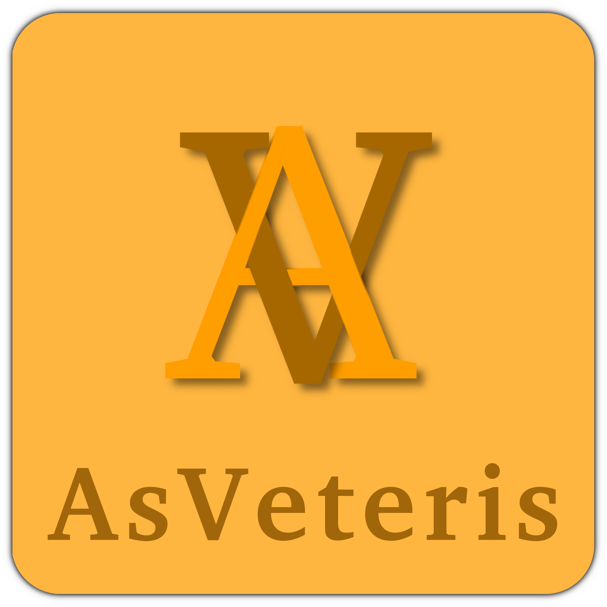

Le A et le V de “Asveteris” sont croisés, pour représenter l’entraide. Cela représente aussi le nom de l’application parce que “As” signifie “en compagnie de” et “Veteris” signifie “personnes agées”. La couleur orange, jaune représente la communication et la santé. C’est une couleur chaude et conviviale, qui correspond bien à notre projet.